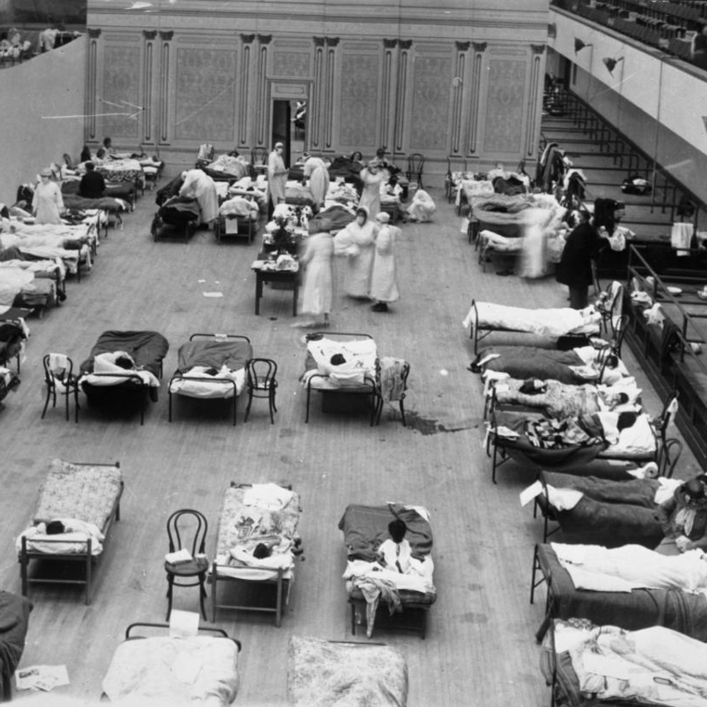
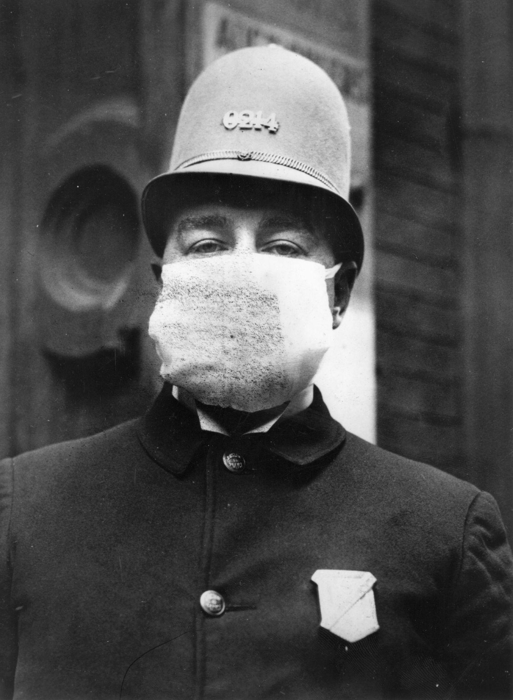
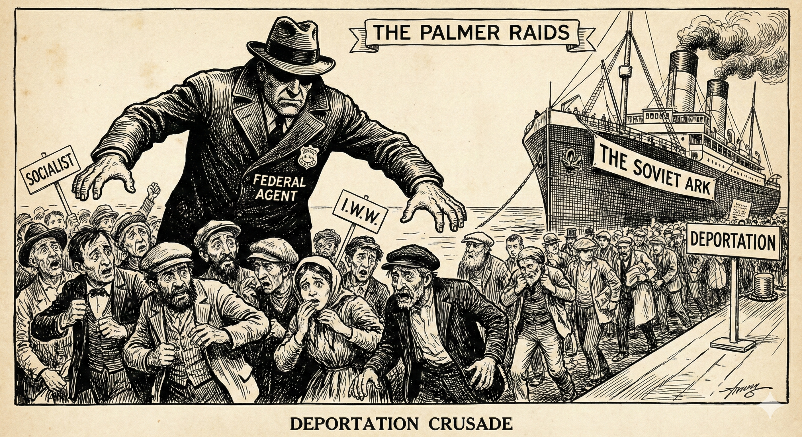
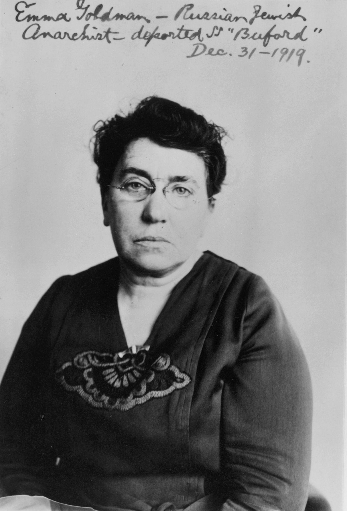
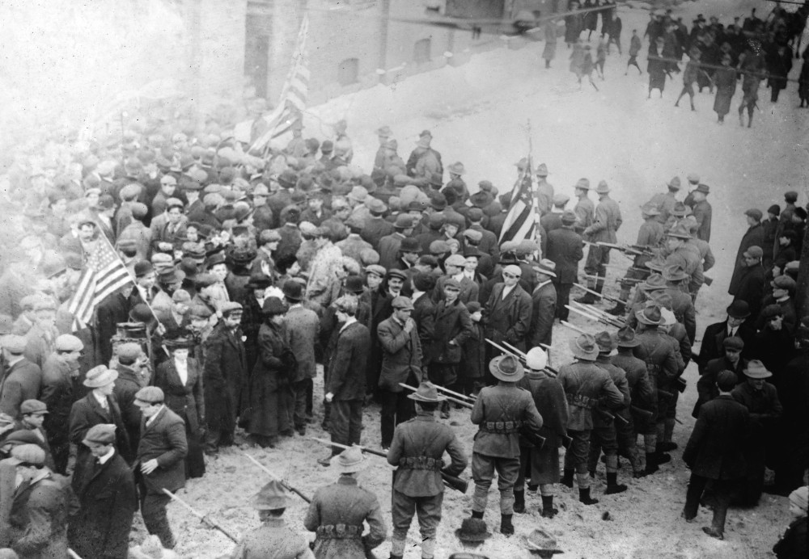
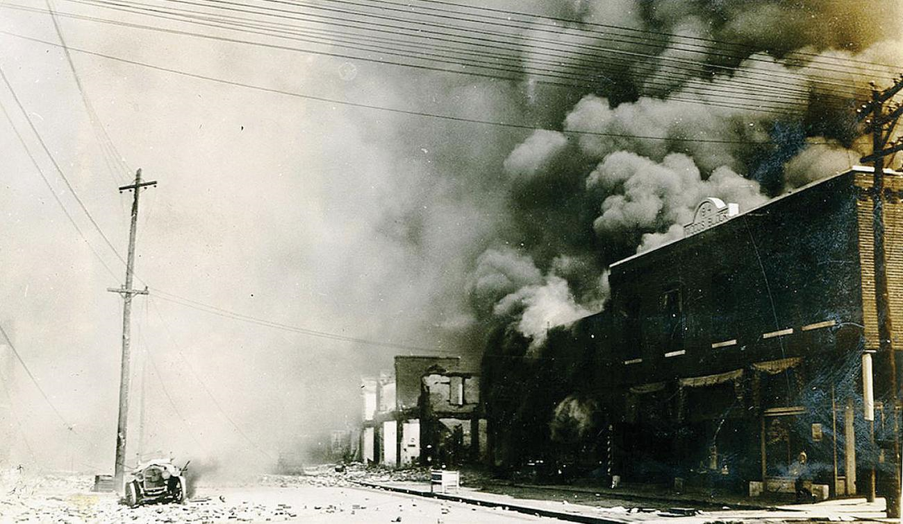
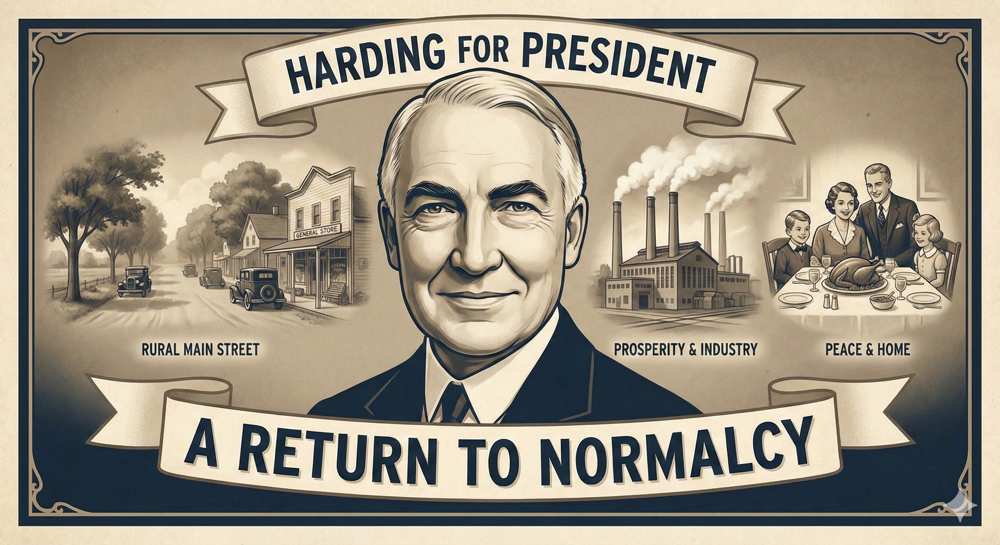
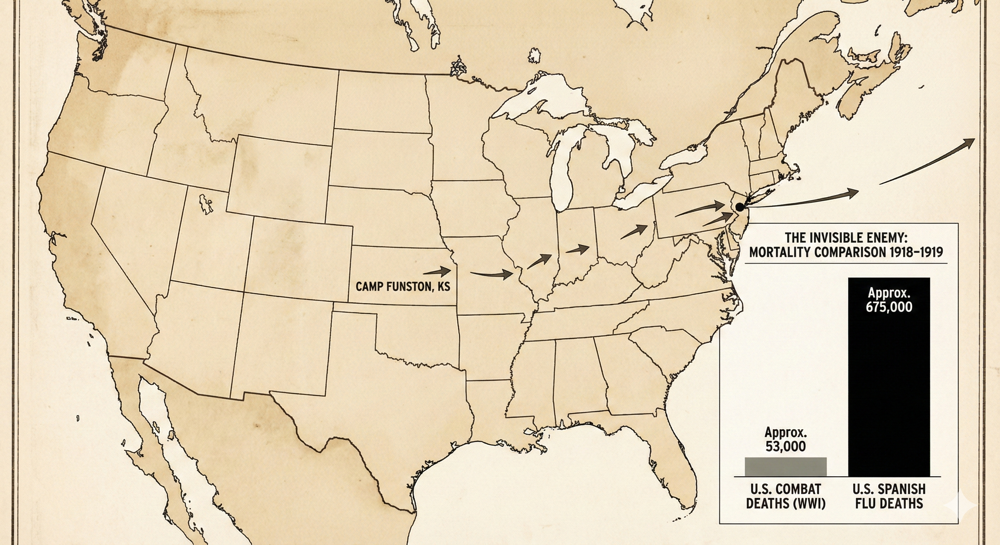

Core Objectives
- Analyze the demographic impact of the Spanish Flu pandemic on the U.S. population and the war effort.
- Trace the origins of the First Red Scare, connecting the Bolshevik Revolution to the Palmer Raids and immigration restrictions.
- Evaluate the causes of the "Red Summer" and the shift in African American resistance following the war.
Key Terms
Spanish Flu (1918 Pandemic) | First Red Scare | Bolshevik Revolution | A. Mitchell Palmer | Palmer Raids | J. Edgar Hoover | Emma Goldman | Sacco and Vanzetti | Boston Police Strike | Seattle General Strike | Red Summer (1919) | Chicago Race Riot | Tulsa Race Massacre (1921) | Warren G. Harding | "Return to Normalcy"
The Invisible Killer: The Spanish Flu Pandemic

The sudden and massive influx of influenza patients in the fall of 1918 rapidly overwhelmed local healthcare systems, forcing municipalities to convert public spaces into temporary emergency wards to manage the unprecedented mortality rates among healthy young adults.
Analysis Question: How does the conversion of public spaces into medical wards reflect the structural limitations of early 20th-century urban healthcare systems during a biological crisis?
As the guns fell silent on the battlefields of Europe in November 1918, Americans looked forward to a period of peace and healing. However, even before the war officially ended, a new and terrifying threat had begun to sweep across the globe. This was not an invading army, but a biological one. The Spanish Flu (1918 Pandemic) became one of the deadliest disasters in human history, killing significantly more people than the Great War itself. Unlike common seasonal flus that typically target the very old and very young, this particular strain of the virus was uniquely lethal to healthy young adults—the same demographic that made up the nation’s workforce and military.
The pandemic struck in three distinct waves. The first wave appeared in early 1918 and seemed relatively mild. However, the second wave, which arrived in the fall of 1918, was catastrophic. Because the United States was still fully mobilized for war, the conditions were perfect for a virus to spread. Thousands of soldiers lived in cramped barracks at training camps like Fort Devens in Massachusetts and Camp Funston in Kansas. When these men were shipped overseas on crowded transport ships, they carried the virus with them. The movement of troops acted as a global delivery system for the disease, accelerating its spread to every corner of the earth.
In the United States, the impact was devastating. Public life came to a grinding halt in many cities. Local governments issued orders to close schools, churches, and theaters to prevent the spread of the virus. In some places, it was illegal to cough or sneeze in public without covering your mouth, and citizens were required to wear gauze masks. The sheer number of deaths overwhelmed the healthcare system. Hospitals ran out of beds, and in many cities, morgues were filled to capacity. In Philadelphia, for example, the death rate was so high that horse-drawn carts patrolled the streets, with drivers calling for people to bring out their dead, much like the plagues of the Middle Ages.

Masked Seattle police officers enforce public health regulations during the Spanish Flu pandemic, 1918.
The demographic impact of the pandemic was staggering. Estimates suggest that approximately 675,000 Americans died from the flu—more than ten times the number of Americans killed in combat during World War I. Globally, the death toll is estimated to be between 50 million and 100 million people. The pandemic also had a direct effect on the war effort. At one point, nearly a quarter of the U.S. Army was sick, and thousands of soldiers died of the flu before they even reached the front lines. The trauma of the pandemic, occurring simultaneously with the horrors of industrial warfare, left the American public exhausted and deeply unsettled as they entered the year 1919.
Medical science at the time was not yet advanced enough to fully understand or combat a virus. While doctors knew about bacteria, viruses were still largely mysterious. There were no antibiotics to treat secondary infections like pneumonia, and there was certainly no vaccine. Healthcare workers could do little more than provide "supportive care," which meant keeping patients hydrated and comfortable while their bodies fought the infection. The lack of a clear medical solution contributed to the sense of panic and helplessness that gripped the nation.
The pandemic also highlighted social and economic inequalities. While the virus hit every community, crowded urban tenements and poor rural areas suffered disproportionately. In these areas, social distancing was impossible, and access to quality medical care was non-existent. The collective memory of 1919 is often dominated by political strikes and riots, but for the average American family, the year was defined by the empty chairs at the dinner table left by the invisible enemy. Families were forced to grieve in isolation, as traditional funeral rites were often prohibited to prevent further contagion. This private suffering, occurring on a mass scale, created a profound psychological rift in the American experience, making the transition back to civilian life incredibly difficult for returning veterans and their families alike.
1. Why did the Spanish Flu pandemic have such a significant impact on the U.S. military effort during World War I?
2. Why was the 1918 flu strain considered uniquely terrifying compared to typical seasonal flus?
3. What role did the U.S. military play in the global spread of the Spanish Flu?
4. How did the limitations of medical science in 1919 affect the response to the pandemic?
The First Red Scare: Hysteria and the Palmer Raids

Following the Bolshevik Revolution and a series of domestic bombings, federal agencies systematically targeted immigrant communities and suspected political radicals without due process, culminating in mass deportations based primarily on political affiliation rather than criminal action.
Analysis Question: In what ways did the association between radical politics and recent immigrants serve to justify the suspension of civil liberties during periods of national anxiety?
While the pandemic ravaged the population, a different kind of fear began to take root in the American psyche: the fear of political subversion. This period, known as the First Red Scare, was a wave of intense anti-communist paranoia that swept the country in 1919 and 1920. The roots of this hysteria lay in the Bolshevik Revolution of 1917 in Russia. Led by Vladimir Lenin, the Bolsheviks had overthrown the Russian monarchy and established a communist state. They called for a worldwide revolution of the working class to topple capitalist governments everywhere.
To many Americans, this was a direct threat to the "American Way of Life"—a system based on private property, individual liberty, and democratic government. The fear was intensified by a series of events in 1919 that seemed to suggest a communist plot was underway in the United States. A series of mail bombs were sent to prominent government and business leaders, including John D. Rockefeller and Supreme Court Justice Oliver Wendell Holmes. One bomb even exploded at the home of the U.S. Attorney General, A. Mitchell Palmer.

Attorney General A. Mitchell Palmer, whose anti-radical campaign led to the controversial Palmer Raids.
Palmer, who had presidential ambitions, used these attacks to justify a massive government crackdown on suspected radicals. He appointed J. Edgar Hoover to head a new anti-radical division within the Justice Department (which would later become the FBI). Together, they organized a series of coordinated attacks known as the Palmer Raids. Throughout late 1919 and early 1920, federal agents burst into the meeting halls and homes of suspected communists, socialists, and anarchists. Thousands of people were arrested, often without warrants and held for long periods without being charged with a crime.
The Red Scare was deeply intertwined with nativism—the suspicion of immigrants and foreign influences. Many of the people targeted in the Palmer Raids were immigrants who had not yet become citizens. The government used the Alien Act of 1918 to deport hundreds of people based on their political beliefs rather than any specific illegal actions. The most famous example of this was the deportation of Emma Goldman, a well-known anarchist and feminist who had lived in the U.S. for decades. She, along with 248 others, was put on a ship nicknamed the "Soviet Ark" and sent back to Russia.

Emma Goldman, anarchist activist deported during the Palmer Raids, symbolizing the era’s fear of political radicalism.
The atmosphere of suspicion extended into the legal system. One of the most controversial cases of the era involved Sacco and Vanzetti, two Italian immigrants and self-proclaimed anarchists.

Nicola Sacco and Bartolomeo Vanzetti, whose murder trial became an international symbol of injustice.
They were arrested in 1920 for the robbery and murder of a factory paymaster and a guard in South Braintree, Massachusetts. Despite weak evidence and multiple witnesses providing alibis for the men, they were convicted and sentenced to death. Many observers believed they were convicted more for their radical political views and their immigrant status than for any actual evidence of the crime. Their case became a global cause célèbre, symbolizing the perceived injustice of the Red Scare era.
The First Red Scare eventually burned itself out. Palmer’s credibility suffered a major blow when he predicted a massive, violent uprising on May Day (International Workers' Day) in 1920 that never happened. As the predicted violence failed to materialize, the public began to grow weary of the constant alarms. Furthermore, prominent lawyers and civil liberties advocates began to speak out against the government’s disregard for due process and the Bill of Rights. While the intense hysteria faded, the period left a lasting legacy of government surveillance and a deep-seated suspicion of labor unions and radical politics. The Scare effectively marginalized political dissent for a decade, ensuring that the pro-business policies of the 1920s would meet little organized resistance from the political left.
5. What was the primary justification used by A. Mitchell Palmer for the "Palmer Raids"?
6. What event in Russia served as the primary catalyst for the First Red Scare in the United States?
7. What was a significant outcome of the Palmer Raids led by A. Mitchell Palmer and J. Edgar Hoover?
8. The case of Sacco and Vanzetti is often cited by historians as an example of:
Labor Unrest and the Post-War Economy

The deployment of armed state militias to suppress industrial walkouts exemplifies the heavy-handed government tactics used to break the massive wave of labor unrest triggered by post-war inflation and the sudden rollback of wartime worker protections.
Analysis Question: How does the visual of armed troops facing civilian workers illustrate the government's stance on organized labor and public safety during periods of severe economic instability?
The year 1919 was also defined by an unprecedented wave of labor strikes. During the war, the government had worked closely with labor unions to ensure continuous production. In exchange for a "no-strike" pledge, unions saw their memberships grow and their wages increase. However, once the war ended, the government lifted price controls, and inflation skyrocketed. The cost of living doubled, but wages remained stagnant. Furthermore, business leaders, no longer under pressure to maintain wartime production, moved to roll back the gains unions had made, such as the eight-hour workday.
The result was a massive explosion of industrial conflict. Over 3,600 strikes occurred in 1919, involving more than 4 million workers. Two of the most significant were the Seattle General Strike and the Boston Police Strike. In Seattle, more than 60,000 workers walked off the job, bringing the entire city to a standstill for five days.

Crowds gather during the Seattle General Strike of 1919, the first citywide general strike in American history.
This was the first "general strike" in American history, where workers from many different industries struck together in solidarity. Although the strike was peaceful, the mayor of Seattle and many national newspapers labeled it a "Bolshevik" attempt to start a revolution, further fueling the Red Scare.
The Boston Police Strike of September 1919 had an even greater political impact. Boston police officers had not received a raise in years and were working in deteriorating conditions. When they attempted to form a union and went on strike, the city was left without police protection, and some looting occurred. The Governor of Massachusetts, Calvin Coolidge, took a hardline stance. He called in the National Guard to restore order and famously declared, "There is no right to strike against the public safety by anybody, anywhere, any time."

Massachusetts National Guard soldiers patrol Boston during the Boston Police Strike.
Coolidge fired all the striking officers and replaced them with new recruits. His firm handling of the situation made him a national hero among conservatives and eventually propelled him to the vice presidency and then the presidency. The failure of the 1919 strikes was a major setback for organized labor. Business leaders used the public’s fear of radicalism to associate unions with communism, a tactic that would keep the labor movement on the defensive throughout the 1920s.
The transition from a wartime to a peacetime economy was rocky. The sudden cancellation of billions of dollars in war contracts led to a brief but sharp recession. Returning soldiers struggled to find jobs, often competing with African Americans and women who had entered the industrial workforce during the war. This economic competition, combined with the underlying racial tensions of the era, created a volatile social environment that was ready to explode. The lack of a clear federal plan for demobilization meant that millions of Americans were left to navigate a rapidly changing economy with little support, leading to deep-seated resentment that often found an outlet in social conflict.
9. How did Governor Calvin Coolidge respond to the Boston Police Strike of 1919?
10. Which economic factor most contributed to the explosion of labor strikes in 1919?
11. How did the Seattle General Strike differ from most other labor disputes of the era?
12. Governor Calvin Coolidge’s response to the Boston Police Strike was significant because:
The Red Summer: Racial Violence and the New Negro

The systematic annihilation of the prosperous Greenwood district in Tulsa, Oklahoma, illustrates the extreme and systemic nature of racial violence during this era, where economic resentment and unchecked white supremacy culminated in the targeted destruction of a thriving Black community and its foundational wealth.
Analysis Question: How does the scale of destruction in the Greenwood district reflect the broader consequences of economic competition and racial hostility in the post-World War I United States?
As if the pandemic, the Red Scare, and labor unrest were not enough, 1919 also witnessed some of the worst racial violence in American history. This period became known as the Red Summer (1919), a term coined by NAACP leader James Weldon Johnson to describe the blood that flowed in dozens of American cities. The violence was the result of a "perfect storm" of factors: the Great Migration, economic competition, and the changed expectations of African American veterans.
During the war, hundreds of thousands of African Americans had moved from the rural South to the industrial North in search of jobs and an escape from Jim Crow laws. This demographic shift created intense competition for housing and employment in northern cities. Furthermore, about 400,000 African American men had served in the military during World War I. Having fought "to make the world safe for democracy" in Europe, these veterans returned home with a new sense of pride and a determination to claim their full rights as citizens. This assertive attitude was often met with violent resistance from white citizens who wanted to maintain the pre-war racial status quo.
The violence erupted in more than two dozen cities. The Chicago Race Riot was one of the most severe. It began when a Black teenager, Eugene Williams, accidentally drifted into the "white" section of a segregated beach on Lake Michigan. White bathers threw rocks at him, causing him to drown. When the police refused to arrest the man identified as the rock-thrower, fighting broke out between Black and white crowds. The violence lasted for nearly a week, resulting in 38 deaths and leaving over 1,000 families—mostly Black—homeless.

Destroyed homes following the Chicago Race Riot of 1919, illustrating the scale of racial violence during the Red Summer.
What distinguished the Red Summer from previous eras of racial violence was the level of Black resistance. African Americans did not simply flee; they fought back. In Washington D.C., Black veterans organized armed patrols to protect their neighborhoods from white mobs. This spirit of defiance was part of a broader cultural and political movement often called the "New Negro" movement. It signaled that the era of passive submission to racial violence was over.
Although it occurred slightly later, the Tulsa Race Massacre (1921) represented the extreme peak of this era's racial hostility. In the early 20th century, the Greenwood district of Tulsa, Oklahoma, was one of the most prosperous African American communities in the nation, often called the "Black Wall Street." In June 1921, following an unproven accusation against a Black man involving a white woman, white mobs—some of them deputized and armed by city officials—invaded Greenwood.
Over the course of 48 hours, the mobs burned more than 35 square blocks of the district to the ground.

Ruins of the Greenwood District after the Tulsa Race Massacre of 1921, once known as "Black Wall Street."
Private airplanes were reportedly used to drop incendiary devices on the neighborhood. While the official death toll at the time was listed as 36, modern historians believe as many as 300 people were killed. Thousands were left homeless and held in internment camps. For decades, the massacre was largely omitted from history books and public discussion, representing a profound collective failure to address the depths of American racial trauma. The massacre destroyed not just buildings, but the economic foundation of a generation of Black Tulsans, illustrating the high cost of African American success in a society dominated by white supremacy.
13. What was a major cause of the "Red Summer" of 1919?
14. What demographic shift provided the backdrop for the racial violence of the Red Summer?
15. The "New Negro" movement of the post-war era was characterized by:
16. What was the ultimate impact of the Tulsa Race Massacre on the Greenwood district?
The Search for Stability: Harding and the "Return to Normalcy"

The accumulated trauma of global war, a deadly pandemic, and severe domestic turmoil created a profound psychological exhaustion within the electorate, leading to a decisive rejection of progressive reform and internationalism in favor of isolationist and pro-business policies.
Analysis Question: What underlying societal fears made the vague promise of "normalcy" more appealing to voters than continued progressive reform in 1920?
By the end of 1919, the American public was exhausted. The idealism of Woodrow Wilson’s "Fourteen Points" had been replaced by the grim realities of a pandemic, domestic terrorism, labor strikes, and race riots. Americans were tired of reform, tired of sacrifice, and tired of international responsibilities. They craved stability and a sense of the familiar.
In the election of 1920, the Republican candidate, Warren G. Harding,

President Warren G. Harding during his 1920 campaign, promising Americans a "Return to Normalcy".
captured this national mood perfectly. Harding was a genial senator from Ohio who lacked the intellectual depth of Wilson but possessed a comforting presence. His campaign slogan was a promise of a "Return to Normalcy". While "normalcy" wasn't actually a word in the dictionary at the time, everyone understood what Harding meant. He meant a return to a time before the war, before the Progressive reforms, and before the world became so complicated.
Harding’s vision of normalcy included a retreat from international entanglements (isolationism) and a return to pro-business economic policies (laissez-faire). His overwhelming victory—winning over 60% of the popular vote—signaled the end of the Progressive Era and the beginning of a decade of Republican dominance. The American people had decided that they were done trying to change the world; they just wanted to enjoy the benefits of peace and prosperity. However, as the 1920s would prove, the forces of modernization had already changed the country forever, and there was no true way to go back to the world as it was before 1914. Harding’s presidency would mark the start of a period where business interests and social traditionalism would define the national agenda, even as the undercurrents of the 1919 shocks continued to vibrate beneath the surface of American life.
17. Warren G. Harding’s promise of a "Return to Normalcy" essentially meant:
18. The election of 1920 is considered a turning point because it:
19. Why was Harding’s message so effective with the 1920 electorate?
20. What policy shift characterized the start of the 1920s following Harding's victory?
📊 Data and Debate: The Invisible Enemy

The statistical reality of the 1918 pandemic eclipsed the mortality of military combat by more than tenfold, directly impacting the domestic workforce and devastating the exact demographic most needed for economic and military mobilization.
Analysis Question: How does comparing the statistical magnitude of pandemic mortality to combat mortality challenge traditional historical narratives of the World War I era?
The Evidence
If we look at the death statistics for the year 1918–1919, we see a startling comparison. United States combat deaths in World War I totaled approximately 53,000. In contrast, deaths from the Spanish Flu (1918 Pandemic) in the U.S. are estimated at approximately 675,000. This data reveals that for every American soldier who died from a German bullet or shell, more than 12 Americans died from a microscopic virus. The pandemic was mathematically a much larger disaster for the American population than the war itself. Furthermore, the death rate for the flu was highest among people aged 20 to 40, which is typically the group most resistant to disease.
What the Data Reveals
The demographic skew toward healthy young adults significantly impacted the U.S. workforce and military readiness. Troop movements, both domestic and international, acted as a primary vector for the disease. For example, the crowded conditions at Camp Funston in Kansas and the subsequent transit of those soldiers to the Western Front provided an ideal environment for the virus to mutate and spread.
The Historical Debate
Historians often debate why the pandemic is frequently treated as a "footnote" in history books compared to the massive amount of space dedicated to the military history of World War I. One theory is that war fits into a traditional narrative of "heroism" and "national purpose," while a pandemic feels like a senseless, random tragedy that people would rather forget. Another theory is that because the pandemic happened simultaneously with the end of the war, the two events became blurred in the public's memory.
Why It Matters
Understanding the scale of the pandemic helps us understand the profound "exhaustion" of the American public in 1919. It wasn't just war weariness; it was a deep psychological trauma caused by a year where death was present in every neighborhood, not just on a distant battlefield. This collective trauma directly contributed to the desire for a "Return to Normalcy" and the xenophobia of the First Red Scare.
Perspective Questions
Analyze the Imagery: Why do historical accounts and memorials often focus on combat soldiers and battlefields rather than the civilian victims of the pandemic? How does the "heroic" narrative of war contrast with the "senseless" nature of a viral outbreak in the public imagination?
Compare Viewpoints: Contrast the likely perspective of a politician in 1919 who wanted to focus on the Treaty of Versailles with that of a local health official in Philadelphia struggling with filled morgues. How do these differing priorities explain the tension between "international diplomacy" and "domestic crisis" during this period?
Evaluate Strategy: Why was Warren G. Harding’s slogan of "Return to Normalcy" more effective in winning the 1920 election than the high-minded internationalism of the Democrats? Consider how the dual trauma of the war and the pandemic might have made Americans more receptive to simple, comforting messages than to complex global problems.
Vocabulary Check
As World War I came to a close, Americans hoped for an era of peace. Instead, they were met with a series of overlapping crises. Even before the troops returned, a deadly biological threat known as the swept the globe, ultimately killing over 600,000 Americans—many of them healthy young adults.
Alongside this public health disaster, a wave of political paranoia took hold. Sparked by the 1917 in Russia, Americans grew increasingly fearful of a communist uprising at home. This period of intense anti-radical hysteria became known as the . Following a series of mail bombings, U.S. Attorney General used the attacks to justify a massive government crackdown. He appointed a young to head a new anti-radical division, and together they orchestrated the . During these sweeps, thousands of suspected radicals were arrested without warrants. Many immigrants were deported for their political beliefs, including the famous anarchist and feminist . The intense nativism of the era also influenced the justice system, most notably in the controversial murder trial of , two Italian immigrants who were convicted despite weak evidence.
The post-war economy also suffered severe turbulence. Inflation skyrocketed, leading to over 3,600 labor strikes in 1919 alone. In the Pacific Northwest, over 60,000 workers walked out in solidarity during the . Later that year, the left a major East Coast city without law enforcement, prompting Governor Calvin Coolidge to fire the striking officers and declare that no one had the right to strike against public safety.
Simultaneously, the nation faced an explosion of racial violence. NAACP leader James Weldon Johnson coined the term to describe the bloody conflicts that erupted in dozens of cities, fueled by economic competition and the return of assertive African American veterans. One of the worst conflicts was the , which began when a Black teenager drowned at a segregated beach and escalated into a week of deadly violence. This era of racial hostility reached a devastating peak a couple of years later during the , when white mobs completely destroyed the prosperous Greenwood district, often called "Black Wall Street."
Exhausted by disease, terrorism, strikes, and riots, the American public yearned for stability. In the 1920 election, Republican candidate captured this mood perfectly. By promising a comforting , he won a landslide victory, signaling an end to the Progressive Era and a retreat from the turbulent shocks of 1919.